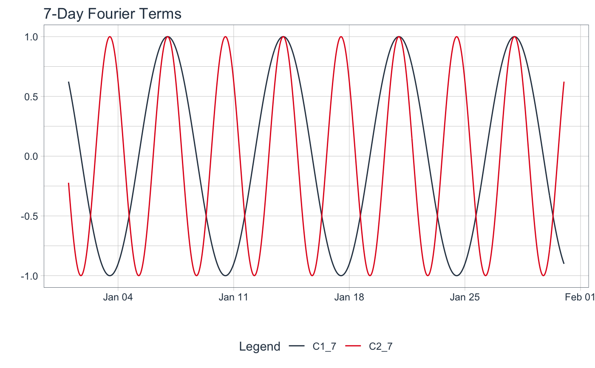

fourier_vec() calculates a Fourier Series from a date or date-time index.
fourier_vec(x, period, K = 1, type = c("sin", "cos"))
| x | A date, POSIXct, yearmon, yearqtr, or numeric sequence (scaled to difference 1 for |
|---|---|
| period | The number of observations that complete one cycle. |
| K | The fourier term order. |
| type | Either "sin" or "cos" for the appropriate type of fourier term. |
A numeric vector
Benefits:
This function is NA padded by default so it works well with dplyr::mutate() operations.
Fourier Series Calculation
The internal calculation is relatively straightforward:
fourier(x) = sin(2 * pi * term * x) or cos(2 * pi * term * x),
where term = K / period.
Period Alignment, period
The period alignment with the sequence is an essential part of fourier series calculation.
Date, Date-Time, and Zoo (yearqtr and yearmon) Sequences - Are scaled to unit difference of 1. This happens internally, so there's nothing you need to do or to worry about. Future time series will be scaled appropriately.
Numeric Sequences - Are not scaled, which means you should transform them to a unit difference of 1 so that your x is a sequence that increases by 1. Otherwise your period and fourier order will be incorrectly calculated. The solution is to just take your sequence and divide by the median difference between values.
Fourier Order, K
The fourier order is a parameter that increases the frequency. K = 2 doubles the frequency.
It's common in time series analysis to add multiple fourier orders (e.g. 1 through 5) to account for
seasonalities that occur faster than the primary seasonality.
Type (Sin/Cos)
The type of the fourier series can be either sin or cos. It's common in time series analysis
to add both sin and cos series.
Fourier Modeling Functions:
step_fourier() - Recipe for tidymodels workflow
tk_augment_fourier_series() - Adds many fourier series to a data.frame (tibble)
Additional Vector Functions:
Fourier Series: fourier_vec()
Box Cox Transformation: box_cox_vec()
Lag Transformation: lag_vec()
Differencing Transformation: diff_vec()
Rolling Window Transformation: roll_apply_vec()
Loess Smoothing Transformation: smooth_vec()
library(tidyverse) library(timetk) date_sequence <- tk_make_date_sequence("2016-01-01", "2016-01-31", by = "hour") # --- VECTOR --- fourier_vec(date_sequence, period = 7 * 24, K = 1, type = "sin")#> [1] 7.818315e-01 8.045978e-01 8.262388e-01 8.467242e-01 8.660254e-01 #> [6] 8.841154e-01 9.009689e-01 9.165623e-01 9.308737e-01 9.438833e-01 #> [11] 9.555728e-01 9.659258e-01 9.749279e-01 9.825665e-01 9.888308e-01 #> [16] 9.937122e-01 9.972038e-01 9.993007e-01 1.000000e+00 9.993007e-01 #> [21] 9.972038e-01 9.937122e-01 9.888308e-01 9.825665e-01 9.749279e-01 #> [26] 9.659258e-01 9.555728e-01 9.438833e-01 9.308737e-01 9.165623e-01 #> [31] 9.009689e-01 8.841154e-01 8.660254e-01 8.467242e-01 8.262388e-01 #> [36] 8.045978e-01 7.818315e-01 7.579717e-01 7.330519e-01 7.071068e-01 #> [41] 6.801727e-01 6.522874e-01 6.234898e-01 5.938202e-01 5.633201e-01 #> [46] 5.320321e-01 5.000000e-01 4.672686e-01 4.338837e-01 3.998920e-01 #> [51] 3.653410e-01 3.302791e-01 2.947552e-01 2.588190e-01 2.225209e-01 #> [56] 1.859116e-01 1.490423e-01 1.119645e-01 7.473009e-02 3.739119e-02 #> [61] 2.303914e-12 -3.739119e-02 -7.473009e-02 -1.119645e-01 -1.490423e-01 #> [66] -1.859116e-01 -2.225209e-01 -2.588190e-01 -2.947552e-01 -3.302791e-01 #> [71] -3.653410e-01 -3.998920e-01 -4.338837e-01 -4.672686e-01 -5.000000e-01 #> [76] -5.320321e-01 -5.633201e-01 -5.938202e-01 -6.234898e-01 -6.522874e-01 #> [81] -6.801727e-01 -7.071068e-01 -7.330519e-01 -7.579717e-01 -7.818315e-01 #> [86] -8.045978e-01 -8.262388e-01 -8.467242e-01 -8.660254e-01 -8.841154e-01 #> [91] -9.009689e-01 -9.165623e-01 -9.308737e-01 -9.438833e-01 -9.555728e-01 #> [96] -9.659258e-01 -9.749279e-01 -9.825665e-01 -9.888308e-01 -9.937122e-01 #> [101] -9.972038e-01 -9.993007e-01 -1.000000e+00 -9.993007e-01 -9.972038e-01 #> [106] -9.937122e-01 -9.888308e-01 -9.825665e-01 -9.749279e-01 -9.659258e-01 #> [111] -9.555728e-01 -9.438833e-01 -9.308737e-01 -9.165623e-01 -9.009689e-01 #> [116] -8.841154e-01 -8.660254e-01 -8.467242e-01 -8.262388e-01 -8.045978e-01 #> [121] -7.818315e-01 -7.579717e-01 -7.330519e-01 -7.071068e-01 -6.801727e-01 #> [126] -6.522874e-01 -6.234898e-01 -5.938202e-01 -5.633201e-01 -5.320321e-01 #> [131] -5.000000e-01 -4.672686e-01 -4.338837e-01 -3.998920e-01 -3.653410e-01 #> [136] -3.302791e-01 -2.947552e-01 -2.588190e-01 -2.225209e-01 -1.859116e-01 #> [141] -1.490423e-01 -1.119645e-01 -7.473009e-02 -3.739119e-02 -1.973634e-12 #> [146] 3.739119e-02 7.473009e-02 1.119645e-01 1.490423e-01 1.859116e-01 #> [151] 2.225209e-01 2.588190e-01 2.947552e-01 3.302791e-01 3.653410e-01 #> [156] 3.998920e-01 4.338837e-01 4.672686e-01 5.000000e-01 5.320321e-01 #> [161] 5.633201e-01 5.938202e-01 6.234898e-01 6.522874e-01 6.801727e-01 #> [166] 7.071068e-01 7.330519e-01 7.579717e-01 7.818315e-01 8.045978e-01 #> [171] 8.262388e-01 8.467242e-01 8.660254e-01 8.841154e-01 9.009689e-01 #> [176] 9.165623e-01 9.308737e-01 9.438833e-01 9.555728e-01 9.659258e-01 #> [181] 9.749279e-01 9.825665e-01 9.888308e-01 9.937122e-01 9.972038e-01 #> [186] 9.993007e-01 1.000000e+00 9.993007e-01 9.972038e-01 9.937122e-01 #> [191] 9.888308e-01 9.825665e-01 9.749279e-01 9.659258e-01 9.555728e-01 #> [196] 9.438833e-01 9.308737e-01 9.165623e-01 9.009689e-01 8.841154e-01 #> [201] 8.660254e-01 8.467242e-01 8.262388e-01 8.045978e-01 7.818315e-01 #> [206] 7.579717e-01 7.330519e-01 7.071068e-01 6.801727e-01 6.522874e-01 #> [211] 6.234898e-01 5.938202e-01 5.633201e-01 5.320321e-01 5.000000e-01 #> [216] 4.672686e-01 4.338837e-01 3.998920e-01 3.653410e-01 3.302791e-01 #> [221] 2.947552e-01 2.588190e-01 2.225209e-01 1.859116e-01 1.490423e-01 #> [226] 1.119645e-01 7.473009e-02 3.739119e-02 1.643354e-12 -3.739119e-02 #> [231] -7.473009e-02 -1.119645e-01 -1.490423e-01 -1.859116e-01 -2.225209e-01 #> [236] -2.588190e-01 -2.947552e-01 -3.302791e-01 -3.653410e-01 -3.998920e-01 #> [241] -4.338837e-01 -4.672686e-01 -5.000000e-01 -5.320321e-01 -5.633201e-01 #> [246] -5.938202e-01 -6.234898e-01 -6.522874e-01 -6.801727e-01 -7.071068e-01 #> [251] -7.330519e-01 -7.579717e-01 -7.818315e-01 -8.045978e-01 -8.262388e-01 #> [256] -8.467242e-01 -8.660254e-01 -8.841154e-01 -9.009689e-01 -9.165623e-01 #> [261] -9.308737e-01 -9.438833e-01 -9.555728e-01 -9.659258e-01 -9.749279e-01 #> [266] -9.825665e-01 -9.888308e-01 -9.937122e-01 -9.972038e-01 -9.993007e-01 #> [271] -1.000000e+00 -9.993007e-01 -9.972038e-01 -9.937122e-01 -9.888308e-01 #> [276] -9.825665e-01 -9.749279e-01 -9.659258e-01 -9.555728e-01 -9.438833e-01 #> [281] -9.308737e-01 -9.165623e-01 -9.009689e-01 -8.841154e-01 -8.660254e-01 #> [286] -8.467242e-01 -8.262388e-01 -8.045978e-01 -7.818315e-01 -7.579717e-01 #> [291] -7.330519e-01 -7.071068e-01 -6.801727e-01 -6.522874e-01 -6.234898e-01 #> [296] -5.938202e-01 -5.633201e-01 -5.320321e-01 -5.000000e-01 -4.672686e-01 #> [301] -4.338837e-01 -3.998920e-01 -3.653410e-01 -3.302791e-01 -2.947552e-01 #> [306] -2.588190e-01 -2.225209e-01 -1.859116e-01 -1.490423e-01 -1.119645e-01 #> [311] -7.473009e-02 -3.739119e-02 -3.132063e-12 3.739119e-02 7.473009e-02 #> [316] 1.119645e-01 1.490423e-01 1.859116e-01 2.225209e-01 2.588190e-01 #> [321] 2.947552e-01 3.302791e-01 3.653410e-01 3.998920e-01 4.338837e-01 #> [326] 4.672686e-01 5.000000e-01 5.320321e-01 5.633201e-01 5.938202e-01 #> [331] 6.234898e-01 6.522874e-01 6.801727e-01 7.071068e-01 7.330519e-01 #> [336] 7.579717e-01 7.818315e-01 8.045978e-01 8.262388e-01 8.467242e-01 #> [341] 8.660254e-01 8.841154e-01 9.009689e-01 9.165623e-01 9.308737e-01 #> [346] 9.438833e-01 9.555728e-01 9.659258e-01 9.749279e-01 9.825665e-01 #> [351] 9.888308e-01 9.937122e-01 9.972038e-01 9.993007e-01 1.000000e+00 #> [356] 9.993007e-01 9.972038e-01 9.937122e-01 9.888308e-01 9.825665e-01 #> [361] 9.749279e-01 9.659258e-01 9.555728e-01 9.438833e-01 9.308737e-01 #> [366] 9.165623e-01 9.009689e-01 8.841154e-01 8.660254e-01 8.467242e-01 #> [371] 8.262388e-01 8.045978e-01 7.818315e-01 7.579717e-01 7.330519e-01 #> [376] 7.071068e-01 6.801727e-01 6.522874e-01 6.234898e-01 5.938202e-01 #> [381] 5.633201e-01 5.320321e-01 5.000000e-01 4.672686e-01 4.338837e-01 #> [386] 3.998920e-01 3.653410e-01 3.302791e-01 2.947552e-01 2.588190e-01 #> [391] 2.225209e-01 1.859116e-01 1.490423e-01 1.119645e-01 7.473009e-02 #> [396] 3.739119e-02 2.801783e-12 -3.739119e-02 -7.473009e-02 -1.119645e-01 #> [401] -1.490423e-01 -1.859116e-01 -2.225209e-01 -2.588190e-01 -2.947552e-01 #> [406] -3.302791e-01 -3.653410e-01 -3.998920e-01 -4.338837e-01 -4.672686e-01 #> [411] -5.000000e-01 -5.320321e-01 -5.633201e-01 -5.938202e-01 -6.234898e-01 #> [416] -6.522874e-01 -6.801727e-01 -7.071068e-01 -7.330519e-01 -7.579717e-01 #> [421] -7.818315e-01 -8.045978e-01 -8.262388e-01 -8.467242e-01 -8.660254e-01 #> [426] -8.841154e-01 -9.009689e-01 -9.165623e-01 -9.308737e-01 -9.438833e-01 #> [431] -9.555728e-01 -9.659258e-01 -9.749279e-01 -9.825665e-01 -9.888308e-01 #> [436] -9.937122e-01 -9.972038e-01 -9.993007e-01 -1.000000e+00 -9.993007e-01 #> [441] -9.972038e-01 -9.937122e-01 -9.888308e-01 -9.825665e-01 -9.749279e-01 #> [446] -9.659258e-01 -9.555728e-01 -9.438833e-01 -9.308737e-01 -9.165623e-01 #> [451] -9.009689e-01 -8.841154e-01 -8.660254e-01 -8.467242e-01 -8.262388e-01 #> [456] -8.045978e-01 -7.818315e-01 -7.579717e-01 -7.330519e-01 -7.071068e-01 #> [461] -6.801727e-01 -6.522874e-01 -6.234898e-01 -5.938202e-01 -5.633201e-01 #> [466] -5.320321e-01 -5.000000e-01 -4.672686e-01 -4.338837e-01 -3.998920e-01 #> [471] -3.653410e-01 -3.302791e-01 -2.947552e-01 -2.588190e-01 -2.225209e-01 #> [476] -1.859116e-01 -1.490423e-01 -1.119645e-01 -7.473009e-02 -3.739119e-02 #> [481] -2.471504e-12 3.739119e-02 7.473009e-02 1.119645e-01 1.490423e-01 #> [486] 1.859116e-01 2.225209e-01 2.588190e-01 2.947552e-01 3.302791e-01 #> [491] 3.653410e-01 3.998920e-01 4.338837e-01 4.672686e-01 5.000000e-01 #> [496] 5.320321e-01 5.633201e-01 5.938202e-01 6.234898e-01 6.522874e-01 #> [501] 6.801727e-01 7.071068e-01 7.330519e-01 7.579717e-01 7.818315e-01 #> [506] 8.045978e-01 8.262388e-01 8.467242e-01 8.660254e-01 8.841154e-01 #> [511] 9.009689e-01 9.165623e-01 9.308737e-01 9.438833e-01 9.555728e-01 #> [516] 9.659258e-01 9.749279e-01 9.825665e-01 9.888308e-01 9.937122e-01 #> [521] 9.972038e-01 9.993007e-01 1.000000e+00 9.993007e-01 9.972038e-01 #> [526] 9.937122e-01 9.888308e-01 9.825665e-01 9.749279e-01 9.659258e-01 #> [531] 9.555728e-01 9.438833e-01 9.308737e-01 9.165623e-01 9.009689e-01 #> [536] 8.841154e-01 8.660254e-01 8.467242e-01 8.262388e-01 8.045978e-01 #> [541] 7.818315e-01 7.579717e-01 7.330519e-01 7.071068e-01 6.801727e-01 #> [546] 6.522874e-01 6.234898e-01 5.938202e-01 5.633201e-01 5.320321e-01 #> [551] 5.000000e-01 4.672686e-01 4.338837e-01 3.998920e-01 3.653410e-01 #> [556] 3.302791e-01 2.947552e-01 2.588190e-01 2.225209e-01 1.859116e-01 #> [561] 1.490423e-01 1.119645e-01 7.473009e-02 3.739119e-02 2.141224e-12 #> [566] -3.739119e-02 -7.473009e-02 -1.119645e-01 -1.490423e-01 -1.859116e-01 #> [571] -2.225209e-01 -2.588190e-01 -2.947552e-01 -3.302791e-01 -3.653410e-01 #> [576] -3.998920e-01 -4.338837e-01 -4.672686e-01 -5.000000e-01 -5.320321e-01 #> [581] -5.633201e-01 -5.938202e-01 -6.234898e-01 -6.522874e-01 -6.801727e-01 #> [586] -7.071068e-01 -7.330519e-01 -7.579717e-01 -7.818315e-01 -8.045978e-01 #> [591] -8.262388e-01 -8.467242e-01 -8.660254e-01 -8.841154e-01 -9.009689e-01 #> [596] -9.165623e-01 -9.308737e-01 -9.438833e-01 -9.555728e-01 -9.659258e-01 #> [601] -9.749279e-01 -9.825665e-01 -9.888308e-01 -9.937122e-01 -9.972038e-01 #> [606] -9.993007e-01 -1.000000e+00 -9.993007e-01 -9.972038e-01 -9.937122e-01 #> [611] -9.888308e-01 -9.825665e-01 -9.749279e-01 -9.659258e-01 -9.555728e-01 #> [616] -9.438833e-01 -9.308737e-01 -9.165623e-01 -9.009689e-01 -8.841154e-01 #> [621] -8.660254e-01 -8.467242e-01 -8.262388e-01 -8.045978e-01 -7.818315e-01 #> [626] -7.579717e-01 -7.330519e-01 -7.071068e-01 -6.801727e-01 -6.522874e-01 #> [631] -6.234898e-01 -5.938202e-01 -5.633201e-01 -5.320321e-01 -5.000000e-01 #> [636] -4.672686e-01 -4.338837e-01 -3.998920e-01 -3.653410e-01 -3.302791e-01 #> [641] -2.947552e-01 -2.588190e-01 -2.225209e-01 -1.859116e-01 -1.490423e-01 #> [646] -1.119645e-01 -7.473009e-02 -3.739119e-02 -1.810944e-12 3.739119e-02 #> [651] 7.473009e-02 1.119645e-01 1.490423e-01 1.859116e-01 2.225209e-01 #> [656] 2.588190e-01 2.947552e-01 3.302791e-01 3.653410e-01 3.998920e-01 #> [661] 4.338837e-01 4.672686e-01 5.000000e-01 5.320321e-01 5.633201e-01 #> [666] 5.938202e-01 6.234898e-01 6.522874e-01 6.801727e-01 7.071068e-01 #> [671] 7.330519e-01 7.579717e-01 7.818315e-01 8.045978e-01 8.262388e-01 #> [676] 8.467242e-01 8.660254e-01 8.841154e-01 9.009689e-01 9.165623e-01 #> [681] 9.308737e-01 9.438833e-01 9.555728e-01 9.659258e-01 9.749279e-01 #> [686] 9.825665e-01 9.888308e-01 9.937122e-01 9.972038e-01 9.993007e-01 #> [691] 1.000000e+00 9.993007e-01 9.972038e-01 9.937122e-01 9.888308e-01 #> [696] 9.825665e-01 9.749279e-01 9.659258e-01 9.555728e-01 9.438833e-01 #> [701] 9.308737e-01 9.165623e-01 9.009689e-01 8.841154e-01 8.660254e-01 #> [706] 8.467242e-01 8.262388e-01 8.045978e-01 7.818315e-01 7.579717e-01 #> [711] 7.330519e-01 7.071068e-01 6.801727e-01 6.522874e-01 6.234898e-01 #> [716] 5.938202e-01 5.633201e-01 5.320321e-01 5.000000e-01 4.672686e-01 #> [721] 4.338837e-01# --- MUTATE --- tibble(date = date_sequence) %>% # Add cosine series that oscilates at a 7-day period mutate( C1_7 = fourier_vec(date, period = 7*24, K = 1, type = "cos"), C2_7 = fourier_vec(date, period = 7*24, K = 2, type = "cos") ) %>% # Visualize pivot_longer(cols = contains("_"), names_to = "name", values_to = "value") %>% plot_time_series( date, value, .color_var = name, .smooth = FALSE, .interactive = FALSE, .title = "7-Day Fourier Terms" )